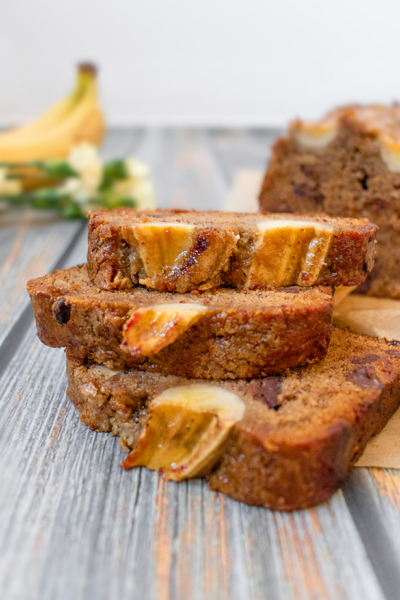
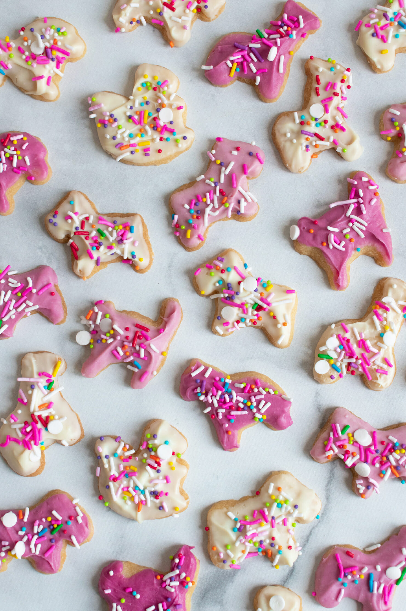

Vegan Donuts

Vegan Banana Bread

Frost Animal Crackers

- 1 1/4 cup all-purpose flour
- 1/4 cup sugar
- 1 tsp baking powder
- 1/2 tsp salt
- 1/2 cup plant-based milk
- 1/4 cup canola oil
- 1 tsp vanilla extract
- 1/2 cup vegan white chocolate
- Vegan red food coloring
- Vegan sprinkles
- 1/2 cup room temp vegan butter
- 1 cup packed brown sugar
- 1 tbsp apple cider vinegar
- 5 ripe bananas (mashed)
- 1 tsp vanilla extract
- 2 cups all-purpose flour
- 1 tsp vanilla extract
- 1 tsp baking powder
- 1 tsp baking soda
- 1/4 tsp salt
- 1 cup room temp vegan butter
- 1.5 cups organic all-purpose flour
- 1 cup organic powdered sugar
- 1 tsp vanilla extract
- 1/2 cup vegan white chocolate chips
- Pink vegan food dye
- Vegan sprinkles (I used Fancy Sprinkles)